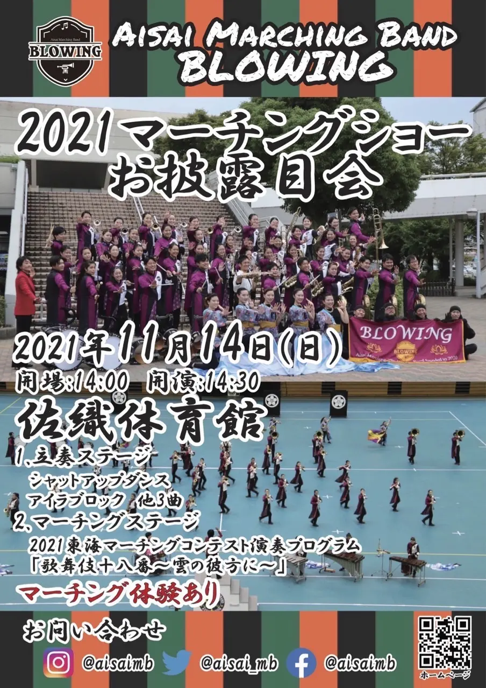

2021マーチングショーお披露目会開催のお知らせ

2021マーチングショーお披露目会、体験練習を合わせたイベントを下記の通り開催いたします。
日時：2021年11月14日(日) 14:00開場 14:30開演
場所：佐織体育館（名鉄津島線 藤浪駅より徒歩10分）
1. 立奏ステージ
シャットアップダンス、アイラブロック、他3曲
2. マーチングステージ
2021東海マーチングコンテスト演奏プログラム「歌舞伎十八番～雲の彼方に～」
【重要】新型コロナウィルス感染症防止対策について
①発熱など風邪症状のある方、その他体調のすぐれない方のご来場はご遠慮ください。
②マスク着用、手指消毒、他の方との距離をとっての観賞にご協力ください。
③予め、整理券の記入欄への記入(氏名、連絡先、お住まいの市町村)をお願いします。
④上記の他、主催者が行う感染症防止対策にご協力ください。
⑤感染状況により開催を中止することがあります。
整理券につきましては、来場された際に、受付でお渡しします。
記入していただいた氏名、連絡先等の個人情報はAisai Marching Band
BLOWING事務局で厳重に管理し、保健所から新型コロナウィルス感染症関連で開示を求められた際のみに使用させていただきます。
会場には係員を配置し、分散しての観賞などを呼びかけさせていただきます。
お客様自身の命を守るため、出演者含め会場にいらっしゃる他の方の命も守るために感染症対策へのご理解とご協力をよろしくお願いいたします。
マーチング発表会開催のお知らせ
マーチング発表会、体験練習、見学会を合わせたイベントを下記の通り開催いたします。
日時：令和3年5月2日(日) 14:30開場 15:00開演
場所：佐織体育館（名鉄津島線 藤浪駅より徒歩10分）
出演団体
①Aisai Marching Band BLOWING
②Marching Band 輝合～Teria～
③TOHO MARCHING BAND GILAUGHTERS(東邦高校マーチングバンド部)
タイムテーブル
15時05分 TERIA
15時25分 東邦
15時45分 BLOWING
16時10分 BLOWINGメンバーと、希望されるお客様によるマーチング体験練習
17時00分 終了
【重要】新型コロナウィルス感染症防止対策について
愛知県では4月20日に「まん延防止等重点措置」が発令されるなど、新型コロナウィルス感染症の患者数が最近になり、再び増えてきています。
そこで、感染症防止対策を徹底した上で、発表会を開催します。
具体的には、
①発熱など風邪症状のある方、その他体調のすぐれない方のご来場はご遠慮ください。
②マスク着用、手指消毒、他の方との距離をとっての観賞にご協力ください。
③予め、整理券の記入欄への記入(氏名、連絡先、お住まいの市町村)をお願いします。
④上記の他、主催者が行う感染症防止対策にご協力ください。
⑤感染状況により開催を中止することがあります。
整理券につきましては、来場された際に、受付でお渡しします。
記入していただいた氏名、連絡先等の個人情報はAisai Marching Band
BLOWING事務局で厳重に管理し、保健所から新型コロナウィルス感染症関連で開示を求められた際のみに使用させていただきます。
会場には係員を配置し、分散しての観賞などを呼びかけさせていただきます。
お客様自身の命を守るため、出演者含め会場にいらっしゃる他の方の命も守るために感染症対策へのご理解とご協力をよろしくお願いいたします。
コンテを読んでいます
 本日のBLOWINGの練習は今度のお披露目会に演奏する曲の三曲目をコンテ読みをしました。若手の団員のY君が作ってくれた素敵なコンテです。
本日のBLOWINGの練習は今度のお披露目会に演奏する曲の三曲目をコンテ読みをしました。若手の団員のY君が作ってくれた素敵なコンテです。
毎週の練習が始まりました
毎週の練習が開始されました。明日も佐織体育館でやります！コロナ対策をして、11月の公開日に向けて頑張ります！
初めての会場とお知らせ
学生、社会人で構成される一般マーチングバンドは全員が揃う日はほぼありません。それでも時間があれば、顔を合わせ音を合わせに集まります。
今日ははじめての会場、草平小でした。BLOWINGの練習場所はこれから勝幡小か草平小になりそうです。草平小の管理人のSさんはとても気安く、かげながから応援してくださる方です。勝幡の管理人Kさんもこれまた理解のある方で、いつも楽しそうに吹奏楽の音を聞いていてくださいます。
楽器を保管してくださっている佐織公民館の方々にもお世話になってます。BLOWINGの立ち上げ一年目にしてたくさんの方からの協力を頂き、我々の活動は成り立っております。いつか、音楽で皆様に恩返しできたらと思っています。
さて、つきましては来る１１月２２日 日曜日 夜の7時より佐織体育館でBLOWINGの初お披露目会を予定しております。また、お時間ありましたらどうぞいらしてください。
ただし、コロナの感染状況によっては観客の制限、お披露目の延期も考えておりますので、ご了承下さい。（ホームページで随時、お知らせしていきます。）
久しぶりの練習
緊急事態宣言明けの一ヶ月ぶりの練習でした。
しかし、暑い！コロナも熱中症も心配ですが久しぶりに体を動かし大量の汗をかきました。本場を秋に控えていて、九月からは毎週のように練習があります。
感染予防対策を万全にして、練習にこれからも取り組んでいきます。
緊急事態宣言に伴う重要なお知らせ
新型コロナウイルス感染拡大防止に伴い、愛知県で緊急事態宣言が発令されました。
当面の間、本バンドの活動を自粛いたします。緊急事態宣言の解除および昨今の状況を踏まえ、練習再開は8月30日からといたします。
初公民館練習を行いました
こんにちは！
本日は初合奏(ほぼ初見)を行いました！笑
やっぱり皆で吹くのは本当に楽しいですね🤗
20代前後の参加者が多かったのでそれっぽい感じになりました😎笑
嬉しいことに昨日も練習見学、体験に来てくれた方々がいました！
本当にありがとうございます！
入団するしないに関わらず、音楽は色々な繋がりを広げてくれますね！
そんな繋がり、皆さんのやりたいこと
叶えたい夢をもっと大切にして
一緒に音楽を作っていけたらと思っています！
Marching Bandとありますが、苦手な人、やりたくない人でも構いません！笑
まだまだ入団希望、練習見学、体験お待ちしております😊
お問い合わせはこちらよりお願い致します！
皆様とマーチングを通して成長していけたらと思います！！
今年度BLOWINGで取り組んでいく曲を決定しました
BLOWINGで取り組んでいく曲が決定しました。
いつか、どこかで皆様の前で演奏できる日を楽しみにしております。
①ファンタズミック
②紅蓮華
③I Love Rock 'n' Roll
初練習を行いました！
 筋トレから始まり
筋トレから始まり
全体でのベーシック
動きと楽器隊に分かれての
自由練習という流れでした！！
今回はガッツリ体幹トレーニングや
筋トレをやったので、なかなかハードでしたね😭笑
久しぶりの音出しも楽しんでやってくれてました🤗
今後の演奏曲目も決めましたので
次回の練習(7月12日)が楽しみですね！！
今回の練習では
見学者がいらっしゃいました！！
こうゆう場で、新たな出会い、久しぶりの出会い、があると本当に嬉しいものですね😆
皆様とマーチングを通して
成長していけたらと思います！！
バンドの愛称が決定されました！
バンドの愛称は"BLOWING"（ブローイング）です。
「新しい風を吹かせる」という願いを込めて、名付けられました。
今後とも、Aisai Marching Band "BLOWING"をよろしくおねがいします。
第2回入団説明会＆マーチングお試し練習を行いました
本日、第2回目となる説明会を行いました。
前回に引き続き40名程の方々に参加していただきました。
参加者の皆さん、久しぶりに動かれて体の方はいかがですか？
筋肉痛の方もいらっしゃるかもしれませんが、マーチングをしているときの皆さんの目はキラキラと輝いていました。
練習のたびに団員登録が増えていくことが嬉しい限りです。現時点で正式登録の方は25名です。
まだまだ、募集中。
次回の練習は21日に行います。練習見学などされたい方は、お気軽にご連絡ください。
また、説明会に参加された方の中で、入団を希望される方は下記応募フォームより登録をお願いします。
応募フォーム
お問い合わせ
第2回入団説明会＆マーチングお試し練習を開催します！
※5/4追記
緊急事態宣言の発表に伴い、延期とさせていただきます。
※5/17追記
緊急事態宣言が解除されたため、6/7（日）に振り替えて行います。
詳細はこちら
説明会に参加された方へ
説明会で参加された方の中で、入団を希望される方は下記応募フォームより登録をお願いします。
応募フォーム
お問い合わせ
第1回入団説明会を行いました
本日、バンドの説明会を行いました。初回にも関わらず40名程の方々に参加していただきました。
世間の情勢的に開催するのはどうかと思いましたが、バンドの理念、これからの方向性など、確認することができました。
さて、次回の説明会は5月の中旬を予定しています。
また、久しぶりに体を動かしてみましょう！！(楽器なしで)
※コロナの影響も考えられますので、マスク着用です
練習とまではいきませんが、動きやすい格好での参加をお願い致します。1時間程身体を動かした後、説明会を行います。
次回も皆さんに会えることを楽しみにしています！！